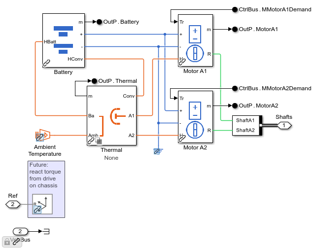
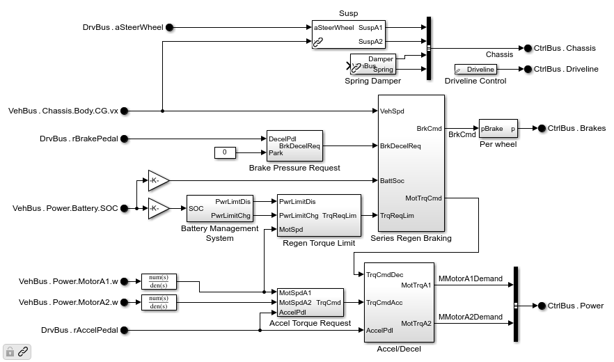
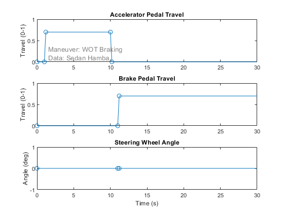
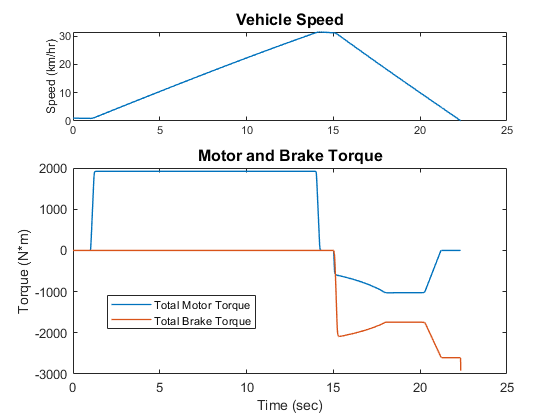
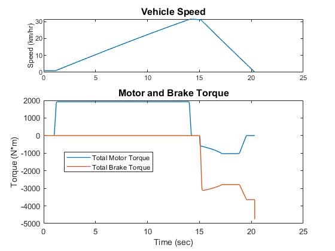

Explore Regenerative Braking
The commands below run the vehicle through a braking test so that we can see how torque from the regenerative braking system and conventional brakes is blended by a serial regenerative braking algorithm. The driver accelerates, releases the accelerator pedal, and then applies the brakes. The level of braking requested by the driver is different in the two events. We can see differences in the torque applied by the regenerative and conventional brakes, both during the maneuver and in the two separate tests. We plot data from Simscape Logging in the Simulink Data Inspector to explore the simulation results.
Contents
- Step 1: Open Model
- Step 2: Configure Model to Stream Simscape Logging to Simulink Data Inspector
- Step 3: Configure Vehicle Model
- Step 4: Select Event
- Step 5: Modify Event
- Step 6: Run simulation with nominal brake request
- Step 7: Explore simulation results in Simulink Data Inspector
- Step 8: Create custom plot using MATLAB
- Step 9: Increase braking request
- Step 10: Run simulation with increased braking request
- Step 11: Add simulation results to the Simulink Data Inspector
- Step 12: Create custom plot using MATLAB
Step 1: Open Model
This can be done from the MATLAB UI, project shortcut, or MATLAB Command line.
mdl = 'sm_car';
open_system(mdl)
Step 2: Configure Model to Stream Simscape Logging to Simulink Data Inspector
This can be done from the MATLAB Command line or Configuration Panel
set_param(mdl,'SimscapeLogToSDI','on')
Step 3: Configure Vehicle Model
This can be done from the MATLAB UI or the MATLAB Command line. It involves loading a data structure into the MATLAB workspace that includes the desired vehicle model configuration and parameters
if verLessThan('matlab', '9.11') sm_car_load_vehicle_data(mdl,'179'); % MFeval tire else sm_car_load_vehicle_data(mdl,'197'); % Multibody tire, R21b and higher end sm_car_load_trailer_data('sm_car','None'); sm_car_config_vehicle('sm_car');
The powertrain has been configured to have two electric motors, one for the front axle and one for the rear.
open_system([mdl '/Vehicle/Vehicle/Powertrain/Power/Electric A1 A2'],'force');
An algorithm for regenerative braking has been enabled in the model.
open_system([mdl '/Controller/Battery 2 Motor'],'force');
Step 4: Select Event
This can be done from the MATLAB UI or the MATLAB Command line. It configures the driver model for open/closed loop maneuvers and loads the necessary parameters into the MATLAB workspace.
The plot shows the actions the driver will take during this maneuver. You can produce this plot from the MATLAB UI or the MATLAB Command line.
sm_car_config_maneuver('sm_car','WOT Braking'); sm_car_plot_maneuver(Maneuver) subplot(311); set(gca,'XLim', [0 30])
Step 5: Modify Event
Adjust maneuver to show torque blending of conventional and regenerative brakes. A few vectors of data in the MATLAB workspace so that the vehicle is going faster when the brakes are first applied and the brake request is reduced so that more torque comes from the regenerative brakes.
% Achieve higher speed to show torque limit of motor % Accelerate for longer Maneuver.Accel.t.Value(4:5) = [14 14.2]; % Increase acceleration torque request Maneuver.Accel.rPedal.Value(3:4) = [0.8 0.8]; % Start braking later Maneuver.Brake.t.Value(2:3) = [15 15.2]; % Lower braking request so more regenerative braking can be used Maneuver.Brake.rPedal.Value(3:4) = [0.5 0.5]; % Plot adjusted maneuver sm_car_plot_maneuver(Maneuver) subplot(311); set(gca,'XLim', [0 30])
Step 6: Run simulation with nominal brake request
This can be done from Simulink or from the MATLAB command line.
sim(mdl)
Step 7: Explore simulation results in Simulink Data Inspector
Use the Simulink Data Inspector to plot the following quantities.
| Vehicle Body Speed VehBus.Chassis.Body.CG.vx |
Front Axle Motor Torque sm_car.Vehicle.Vehicle.Powertrain.Power.Electric_A1_A2.Motor_A1.Motor.torque_elec Front Right Brake Torque sm_car.Vehicle.Vehicle.Brakes.PressureAbstract_DiscDisc.Sensing_Torque_R1.Ideal_Torque_Sensor.T | Battery State of Charge sm_car.Vehicle.Vehicle.Powertrain.Power.Electric_A1_A2.Battery.Battery.stateOfCharge |
Battery Temperature sm_car.Vehicle.Vehicle.Powertrain.Power.Electric_A1_A2.Battery.Battery.temperature |
sm_car_ex06_regen_2motor_plot1
Step 8: Create custom plot using MATLAB
To see the total torque applied at the wheel, we need to add quantities from 2 motors and four brake rotors, and we have to factor in gear ratios. This plot uses MATLAB to calculate the equivalent torque at the wheels.
sm_car_plot8regen(logsout_sm_car)
Step 9: Increase braking request
Adjusting these numerical values in the Maneuver data structure will increase the magnitude of the braking request from the driver.
% Increase braking request Maneuver.Brake.rPedal.Value(3:4) = [0.7 0.7]; sm_car_plot_maneuver(Maneuver) subplot(311); set(gca,'XLim', [0 30])
Step 10: Run simulation with increased braking request
This can be done from Simulink or from the MATLAB command line.
sim(mdl)
Step 11: Add simulation results to the Simulink Data Inspector
Use the Simulink Data Inspector to plot the following quantities from the both runs.
sm_car_ex06_regen_2motor_plot2

Step 12: Create custom plot using MATLAB
To see the total torque applied at the wheel, we need to add quantities from 2 motors and four brake rotors, and we have to factor in gear ratios. This plot uses MATLAB to calculate the equivalent torque at the wheels.
sm_car_plot8regen(logsout_sm_car)
close all